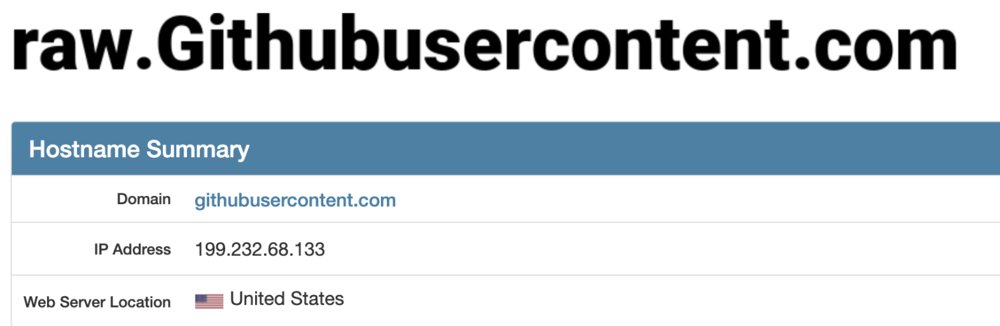

形而上者谓之道；形而下者谓之器。（《周易·系辞上》）
形而上者谓之道；形而下者谓之器。（《周易·系辞上》）
本文涉及使用nvm时候 常见的三个问题
- zsh: command not found: npm
- curl: (7) Failed to connect to raw.githubusercontent.com port 443: Connection refused
- complete:13: command not found: compdef
终端 command not found: npm
今天又遇到这样的问题，因为vscode配置了Oh My Zsh, 加载环境变量是：~/.zshrc;
如果安装过直接
# 来源[github--nvm](https://github.com/nvm-sh/nvm) |
新开终端试试？如果不可以，接着看第二节
终端 安装被拒
第一步配置后，不行，那就重新安装吧，
> curl -o- https://raw.githubusercontent.com/nvm-sh/nvm/v0.37.2/install.sh | bash |
解决方法一
- 访问https://raw.githubusercontent.com/nvm-sh/nvm/v0.37.2/install.sh,保存到本地命名:
nvm.sh, 命名随意，自己开心就行了。 - source nvm.sh
- 等待结束，新开终端，可以正常使用
nvm 命令 - 但是新终端中：
complete:13: command not found: compdef
解决方法二
笔者最近发现 github 的用户头像和自己文章中的图片显示不出来了。然后今天发现安装 homeBrew 和 nvm 出现了标题的报错信息。
> curl -o- https://raw.githubusercontent.com/nvm-sh/nvm/v0.37.2/install.sh | bash |
以上是安装 npm 的报错信息，可以发现，脚本需要到 raw.githubusercontent.com 上拉取代码。
网上搜索了一下，发现是 github 的一些域名的 DNS 解析被污染，导致DNS 解析过程无法通过域名取得正确的IP地址。
DNS 污染
感兴趣的朋友可以去了解一下。DNS 污染
解决方案
打开 https://www.ipaddress.com/ 输入访问不了的域名
查询之后可以获得正确的 IP 地址
在本机的 host 文件中添加，建议使用 switchhosts 方便 host 管理
199.232.68.133 raw.githubusercontent.com |
添加以上几条 host 配置，页面的图片展示就正常了，homebrew 也能装了，nvm 也行动灵活了。
终端 complete:13: command not found: compdef
complete:13: command not found: compdef
# 来源[github--nvm](https://github.com/nvm-sh/nvm) |
总结
回想大学，因为配置环境基本被劝退学编程，真的挺可笑的。
感觉：基本配置应该是开箱即用，其他可选自行看文档